<!DOCTYPE html>
<html lang="ml">
<head>
  <meta charset="utf-8">
  <meta name="viewport" content="width=device-width, initial-scale=1.0">
  <title>Chapter 4 (Pages 67-80) - Class 9 Biology</title>
  <style>

:root {
  --bg-color: #fcfcfd;
  --card-bg: #ffffff;
  --text-color: #1e293b;
  --text-muted: #64748b;
  --primary-color: #0284c7;
  --primary-light: #e0f2fe;
  --border-color: #e2e8f0;
  --radius: 10px;
  --shadow: 0 4px 6px -1px rgb(0 0 0 / 0.05), 0 2px 4px -2px rgb(0 0 0 / 0.05);
}

body {
  font-family: -apple-system, BlinkMacSystemFont, "Segoe UI", Roboto, "Noto Sans Malayalam", "Manjari", "Gayathri", sans-serif;
  background-color: var(--bg-color);
  color: var(--text-color);
  line-height: 1.8;
  font-size: 1.1rem;
  margin: 0;
  padding: 0;
}

.container {
  max-width: 860px;
  margin: 0 auto;
  padding: 2.5rem 1.5rem 5rem 1.5rem;
}

header {
  margin-bottom: 2.5rem;
  padding-bottom: 1.5rem;
  border-bottom: 2px solid var(--border-color);
}

.badge-row {
  display: flex;
  gap: 0.5rem;
  margin-bottom: 0.75rem;
  flex-wrap: wrap;
}

.badge {
  display: inline-block;
  font-size: 0.75rem;
  font-weight: 700;
  text-transform: uppercase;
  letter-spacing: 0.05em;
  padding: 0.25rem 0.65rem;
  border-radius: 9999px;
  background: var(--primary-light);
  color: var(--primary-color);
}

.badge-medium {
  background: #fef3c7;
  color: #b45309;
}

.badge-class {
  background: #dcfce7;
  color: #15803d;
}

h1 {
  font-size: 2.1rem;
  font-weight: 800;
  margin: 0.5rem 0 1rem 0;
  line-height: 1.3;
  color: #0f172a;
}

.nav-bar {
  display: flex;
  justify-content: space-between;
  margin: 1.5rem 0;
  font-size: 0.95rem;
  flex-wrap: wrap;
  gap: 0.5rem;
}

.nav-bar a {
  color: var(--primary-color);
  text-decoration: none;
  font-weight: 600;
  padding: 0.5rem 1rem;
  border-radius: var(--radius);
  background: var(--card-bg);
  border: 1px solid var(--border-color);
  transition: all 0.2s ease;
}

.nav-bar a:hover {
  background: var(--primary-light);
  border-color: var(--primary-color);
}

.nav-bar .disabled {
  color: var(--text-muted);
  pointer-events: none;
  border-color: transparent;
  background: transparent;
}

.page-section {
  background: var(--card-bg);
  border: 1px solid var(--border-color);
  border-radius: var(--radius);
  box-shadow: var(--shadow);
  padding: 2rem;
  margin-bottom: 2.5rem;
}

.page-header {
  display: flex;
  align-items: center;
  justify-content: space-between;
  margin-bottom: 1.25rem;
  padding-bottom: 0.5rem;
  border-bottom: 1px dashed var(--border-color);
}

.page-number {
  font-size: 0.8rem;
  font-weight: 700;
  text-transform: uppercase;
  color: var(--text-muted);
  letter-spacing: 0.05em;
}

.page-content p {
  margin: 0 0 1.25rem 0;
  white-space: pre-wrap;
  word-break: break-word;
}

.page-content p:last-child {
  margin-bottom: 0;
}

.diagram-card {
  margin: 2rem 0;
  text-align: center;
  background: #f8fafc;
  border: 1px solid var(--border-color);
  border-radius: var(--radius);
  padding: 1rem;
  overflow: hidden;
}

.diagram-card img {
  max-width: 100%;
  height: auto;
  border-radius: calc(var(--radius) - 4px);
  display: inline-block;
  box-shadow: 0 2px 4px rgba(0,0,0,0.04);
}

.diagram-card figcaption {
  font-size: 0.85rem;
  color: var(--text-muted);
  margin-top: 0.75rem;
  font-weight: 500;
}

footer {
  margin-top: 3rem;
  padding-top: 2rem;
  border-top: 2px solid var(--border-color);
}

  </style>
</head>
<body>
  <div class="container">
    <header>
      <div class="badge-row">
        <span class="badge badge-class">Class 9</span>
        <span class="badge badge-medium">Malayalam Medium</span>
        <span class="badge">Biology</span>
        <span class="badge">Part 1</span>
      </div>
      <h1>Chapter 4 (Pages 67-80)</h1>
      <div class="nav-bar"><a href="part_1_chapter_03.html">← Chapter 3 (Pages 47-66)</a><a href="index.html">☰ Index</a><span class="nav-bar disabled"></span></div>
    </header>
    <main>
      <section class="page-section" id="page-67">
  <div class="page-header"><span class="page-number">Page 67</span></div>
  <figure class="diagram-card" id="fig_ch04_p067_01">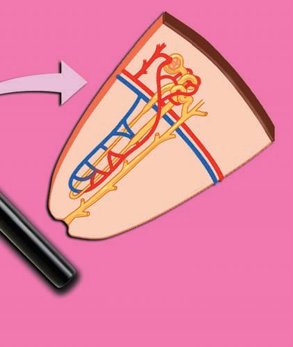<figcaption>Figure fig_ch04_p067_01 (Page 67)</figcaption></figure>
  <figure class="diagram-card" id="fig_ch04_p067_02"><figcaption>Figure fig_ch04_p067_02 (Page 67)</figcaption></figure>
  <figure class="diagram-card" id="fig_ch04_p067_03"><figcaption>Figure fig_ch04_p067_03 (Page 67)</figcaption></figure>
  <figure class="diagram-card" id="fig_ch04_p067_04"><figcaption>Figure fig_ch04_p067_04 (Page 67)</figcaption></figure>
  <figure class="diagram-card" id="fig_ch04_p067_05"><figcaption>Figure fig_ch04_p067_05 (Page 67)</figcaption></figure>
  <figure class="diagram-card" id="fig_ch04_p067_06"><figcaption>Figure fig_ch04_p067_06 (Page 67)</figcaption></figure>
  <figure class="diagram-card" id="fig_ch04_p067_07"><figcaption>Figure fig_ch04_p067_07 (Page 67)</figcaption></figure>
  <figure class="diagram-card" id="fig_ch04_p067_08"><figcaption>Figure fig_ch04_p067_08 (Page 67)</figcaption></figure>
  <figure class="diagram-card" id="fig_ch04_p067_09"><figcaption>Figure fig_ch04_p067_09 (Page 67)</figcaption></figure>
  <figure class="diagram-card" id="fig_ch04_p067_10"><figcaption>Figure fig_ch04_p067_10 (Page 67)</figcaption></figure>
  <figure class="diagram-card" id="fig_ch04_p067_11"><figcaption>Figure fig_ch04_p067_11 (Page 67)</figcaption></figure>
  <figure class="diagram-card" id="fig_ch04_p067_12"><figcaption>Figure fig_ch04_p067_12 (Page 67)</figcaption></figure>
  <figure class="diagram-card" id="fig_ch04_p067_13"><figcaption>Figure fig_ch04_p067_13 (Page 67)</figcaption></figure>
  <div class="page-content">
    <p>zœ“”šȻc IX</p>
    <p>¢sšÅĞs§–§</p>
    <p>ƾڍce†ŠŰ‹šuā‘c</p>
    <p>g‘c†›ŒǫŠš—DZ‹šuc</p>
    <p>Œ†•DZ†›Æ pŽ¢zš› ƽÚs‘šǫ‚§
ˆÅ“›Ĺ›¡źfՂ››ǫg“i„Žš”
Ĺ›Æ †¡ĞƼ›¡ź gŽ“”ā‘›Œšš§
sš¡ƀ}ų‚§ŽÞśÆ†›ųc Œš›†DZ
ā¡‘ eŽ›ăŒšǮų e‚›–žä§Œ eŽ›ƀ
sÇ ƽÚs‘›Æ sš¡ƀ}ų g“š§
¡†¢ƋšsÇ (Nephrons) ¡†¢Ƌš
sÇƽÚs‘¡}v}†šˆŽ“czœ“ ÅƣˆŽ
“Œš e}›Ǚš† v}sā‘š§ q¢Žš
ƽڍ›cns¢„”c 12äc ¡†¢Ƌš
s‘šǫ‚§</p>
    <p>¡†¢ƋšÃ</p>
    <p>¡ŒƼ
s}c†›ŒǫfŦŽ‹šuc</p>
    <p>x›ŅœsŽc 3.10, 3.11mų›“–žx†s‘¡}e}›Ǚš†Ĺ›Æ
“›”s†c¡xƪ§ ƽڍ¡}c¡†¢Ƌš›¡źcv}† Œš›
†DZā¡‘ †œÚc ¡xƭšÄmŅŒšŅce†¢šzDZŒš¡ų§s¡Ĭ
ś ˆĞ›s 3.4 ˆžÅśšÚ
–žx†sÇ</p>
    <p>‹šuc</p>
    <p>ƽÚs‘›¢Ú§ŽÞcmśڝųs’Æ
ƽÚs‘›Æ†›ųcŽÞc ˆ¢ĹÚ§ “—›Úųs’Æ
ƽڍ›Æsš¡ƀ}ųe‚›–žä§ŒeŽ›ƀsÇ
¡†¢Ƌš›¡źpŽǮŝǫgŽĞ‹›Ĺ›ǫsƀ¢ˆšǫ‹šuc
¢ŠšŒšÄ–§sDZšˆ§–ž‘›†ǫ›¡–žä§Œ ¢šŒ›sšzšc
¢šŒ›sšzšĹ›¢Ú§ŽÞ¡ŒĹ›Úųs’Æ
¢šŒ›sšzšĹ›Æ†›ųcŽÞc ˆ¢ĹÚ§ “—›Úųs’Æ
¢ŠšŒšÄ–§sDZšƄDZž‘›¡†c¢”tŽ†š‘›¡c
ŠŰ›ƀ›Úų†œĬs’Æ
ƽښ†‘›ssÇ “ų¢xŽų‚c ŒžŅc ¢”tŽ›ă§ ¡ˆÆ“›–›¡
śڝų‚Œš‹šuc
ŒžŅ“š—›¡}fŽc‹‹šuc
ŒžŅc ŒžŅ–ĕ››¡Ĺ›Úų‹šuc
ˆĞ›s3.4 ƽڍce†ŠŰ‹šuā‘c
67</p>
  </div>
</section><section class="page-section" id="page-68">
  <div class="page-header"><span class="page-number">Page 68</span></div>
  <figure class="diagram-card" id="fig_ch04_p068_01">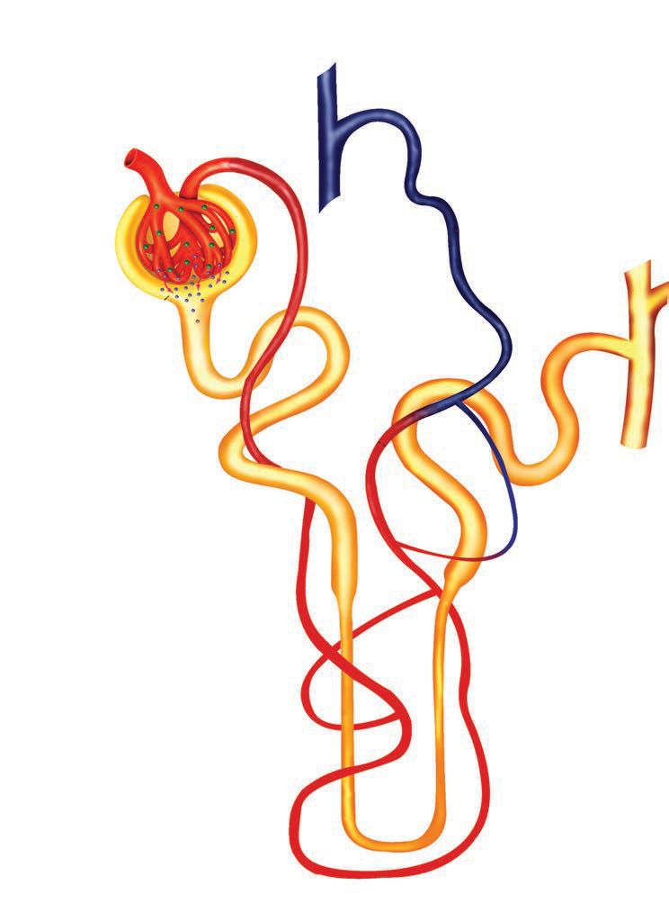<figcaption>Figure fig_ch04_p068_01 (Page 68)</figcaption></figure>
  <figure class="diagram-card" id="fig_ch04_p068_02"><figcaption>Figure fig_ch04_p068_02 (Page 68)</figcaption></figure>
  <figure class="diagram-card" id="fig_ch04_p068_03"><figcaption>Figure fig_ch04_p068_03 (Page 68)</figcaption></figure>
  <figure class="diagram-card" id="fig_ch04_p068_04"><figcaption>Figure fig_ch04_p068_04 (Page 68)</figcaption></figure>
  <figure class="diagram-card" id="fig_ch04_p068_05"><figcaption>Figure fig_ch04_p068_05 (Page 68)</figcaption></figure>
  <figure class="diagram-card" id="fig_ch04_p068_06"><figcaption>Figure fig_ch04_p068_06 (Page 68)</figcaption></figure>
  <figure class="diagram-card" id="fig_ch04_p068_07"><figcaption>Figure fig_ch04_p068_07 (Page 68)</figcaption></figure>
  <figure class="diagram-card" id="fig_ch04_p068_08"><figcaption>Figure fig_ch04_p068_08 (Page 68)</figcaption></figure>
  <figure class="diagram-card" id="fig_ch04_p068_09"><figcaption>Figure fig_ch04_p068_09 (Page 68)</figcaption></figure>
  <figure class="diagram-card" id="fig_ch04_p068_10"><figcaption>Figure fig_ch04_p068_10 (Page 68)</figcaption></figure>
  <figure class="diagram-card" id="fig_ch04_p068_11"><figcaption>Figure fig_ch04_p068_11 (Page 68)</figcaption></figure>
  <figure class="diagram-card" id="fig_ch04_p068_12"><figcaption>Figure fig_ch04_p068_12 (Page 68)</figcaption></figure>
  <figure class="diagram-card" id="fig_ch04_p068_13"><figcaption>Figure fig_ch04_p068_13 (Page 68)</figcaption></figure>
  <figure class="diagram-card" id="fig_ch04_p068_14"><figcaption>Figure fig_ch04_p068_14 (Page 68)</figcaption></figure>
  <figure class="diagram-card" id="fig_ch04_p068_15"><figcaption>Figure fig_ch04_p068_15 (Page 68)</figcaption></figure>
  <figure class="diagram-card" id="fig_ch04_p068_16"><figcaption>Figure fig_ch04_p068_16 (Page 68)</figcaption></figure>
  <figure class="diagram-card" id="fig_ch04_p068_17"><figcaption>Figure fig_ch04_p068_17 (Page 68)</figcaption></figure>
  <figure class="diagram-card" id="fig_ch04_p068_18"><figcaption>Figure fig_ch04_p068_18 (Page 68)</figcaption></figure>
  <figure class="diagram-card" id="fig_ch04_p068_19"><figcaption>Figure fig_ch04_p068_19 (Page 68)</figcaption></figure>
  <figure class="diagram-card" id="fig_ch04_p068_20"><figcaption>Figure fig_ch04_p068_20 (Page 68)</figcaption></figure>
  <figure class="diagram-card" id="fig_ch04_p068_21"><figcaption>Figure fig_ch04_p068_21 (Page 68)</figcaption></figure>
  <div class="page-content">
    <p>zœ“”šȻc IX</p>
    <p>ŒžŅc Žžˆ¡ƀ}Æ (Urine formation)
ƽÚs‘›¡ e‚›–žä§Œ eŽ›ƀs‘¡} ‹šuā‘c Åƣā‘c
Œ†Ǡ›šÚ›¢Ƽš h eŽ›ƀsÇ mƂsšŽŒš§ ŽÞ¡Ĺ
eŽ›ă§ Œš›†DZā¡‘ ˆŦǫų‚§#
x›ŅœsŽc 3.12 “›”s†c ¡xƪ§ –žx†sÇ iˆ¢šu›ă§
“ÅÚ§•œǮ§ 3.1 ˆžÅśšÚž</p>
    <p>–žä§ŒeŽ›ÚÆ 8OWUD¿OWUDWLRQ
1
ŽÞc ¢øšŒ–›ž¡}p’s¢ƠšÇe‚›¡
–•›Žā‘›ž¡}–žä§ŒeŽ›Ú›†§“›¢ 
Œšsųg‚›¡ź‰Œš›¢øšŒšÅ
‰›Æ¢ğǮ§mųŝš“scŽžˆ¡ƀ}ųe‰ź§
¡“–›¡źcg‰ź§ ¡“–›¡źc“DZš–
“DZ‚DZš–cŒžŒĬšsųiÅųŒÅ„ch
Ƃ⛍¡–—š›Úų</p>
    <p>¢øšŒšÅ‰›Æ¢ğǯ›¡</p>
    <p>v}sāÇ</p>
    <p>zcøž¢Úš–§eŒ›¢†š
f–›sÇ¢–š›c
¡ˆšĞš–DZcsšŇDZc
e¢šsÇ“›ǮšŒ›†sÇ
ž›ž›Úš–›§
⛍šǮ›†›Ä‚}ā›“</p>
    <p>2 ˆ†Žšu›Žc
(Reabsorption)</p>
    <p>¢øšŒžšÅ ‰›Æ¢ğǮ§ ƽښ†‘›s
›ž¡}
¢”tŽ†š‘››¢Ú§
p’s¢ƠšÇ e‚›Æ †›ų§ e“
”DZ“ǘÚ¡‘ŽÞś¢Ú§ ˆ†
Žšu›Žc¡xƭų</p>
    <p>ŒžŅc
¢”tŽ†š‘››Æ
†›ų§¡ˆÆ“›–›¢
Ú§p’s›¡Ĺų
ŝš“sc</p>
    <p>3</p>
    <p>ǟ“c (Secretion)
ǟ
ŽÞśÆe ›sŒš›
e“¢”•›Úųx›v}sāÇ
ƽښ†‘›s›¢Ú§Ǟ“›Ú¡ƀ}ų</p>
    <p>ŒžŅś¡v}sāÇ
zcž›¢–š›c
¢ãš£§¡ˆšĞš–DZc
¢ãš£§sšÆ–DZc
“āÇ¢‰š–§¢‰Ǯ§
ž›Úš–›§
⛍šǮ›†›Ä‚}ā›“</p>
    <p>–žä§ŒeŽ›ÚÆ
ˆ†Žšu›Žc
Ǟ“c
x›ŅœsŽc3.12 ŒžŅŽžˆœsŽc
68</p>
  </div>
</section><section class="page-section" id="page-69">
  <div class="page-header"><span class="page-number">Page 69</span></div>
  <figure class="diagram-card" id="fig_ch04_p069_01"><figcaption>Figure fig_ch04_p069_01 (Page 69)</figcaption></figure>
  <figure class="diagram-card" id="fig_ch04_p069_02"><figcaption>Figure fig_ch04_p069_02 (Page 69)</figcaption></figure>
  <figure class="diagram-card" id="fig_ch04_p069_03"><figcaption>Figure fig_ch04_p069_03 (Page 69)</figcaption></figure>
  <figure class="diagram-card" id="fig_ch04_p069_04"><figcaption>Figure fig_ch04_p069_04 (Page 69)</figcaption></figure>
  <figure class="diagram-card" id="fig_ch04_p069_05"><figcaption>Figure fig_ch04_p069_05 (Page 69)</figcaption></figure>
  <figure class="diagram-card" id="fig_ch04_p069_06"><figcaption>Figure fig_ch04_p069_06 (Page 69)</figcaption></figure>
  <figure class="diagram-card" id="fig_ch04_p069_07"><figcaption>Figure fig_ch04_p069_07 (Page 69)</figcaption></figure>
  <figure class="diagram-card" id="fig_ch04_p069_08"><figcaption>Figure fig_ch04_p069_08 (Page 69)</figcaption></figure>
  <figure class="diagram-card" id="fig_ch04_p069_09"><figcaption>Figure fig_ch04_p069_09 (Page 69)</figcaption></figure>
  <div class="page-content">
    <p>zœ“”šȻc IX</p>
    <p>Œ—š Œ†›</p>
    <p>ˆ†Žšu›Ž“c Ǟ““c</p>
    <p>ŒžŅc</p>
    <p>ˆ¢ĹƩ§</p>
    <p>–žx†</p>
    <p>–žä§ŒeŽ›ÚÆ¢øšŒšÅ‰›Æ¢ğǮ§ŒžŅ“š—›ƽښ†‘›s
¢”tŽ†š‘›ŒžŅš”c¡ˆÆ“›–§¢øšŒž–§ƽښ Œ†›</p>
    <p>“ÅÚ§•œǮ§ 3.1 ŒžŅŽžˆœsŽc
¢øšŒšÅ‰›Æ¢ğǮ›¡mƼšv}sā‘c ŒžŅś›ƼšĹ‚§
mŦ¡sšĬš§# ˆ†Žšu›Žc ¡xƭ¡ƀ}ų v}sāÇ
Ǟ“›Ú¡ƀ}ųv}sāÇmų›“n¡‚Ƽš¡Œų§s¡ĬŞ
¡†¢Ƌšs‘›Æ †›ų“Žų ŒžŅc ¡ˆÆ“›–›¡Ĺų
e“›¡} †›ų§ ŒžŅ“š—››ž¡} ŒžŅš”Ĺ›¡Ĺ›ŒžŅ†š‘›
“’›ˆŦǫ¡ƀ}ų</p>
    <p>ƾÚs‘¡}f¢ŽšuDzc
ƽÚs‘¡}f¢ŽšuDZś†§ “‘¡Ž¢¡ sšŽDZāÇNJŗ›¢ÚĬ‚Ĭ§
ŒžŅ¡Œš’›Ú¢ƠšÇŒžŅˆƒĹ›¡ ¢ŽšušÚ¡‘ ˆŦǫų
„œÅv¢†Žc ŒžŅ¡Œš’›Úš‚›Ž›Úų‚§ ŒžŅˆƒĹ›Æsšš†›}
ǫ ŠšÜœŽ›s¡‘ ˆŦǫš†ǫ –š DZ‚ ‚}c g‚§
ŒžŅš”Ĺ›¡ź fŦŽǘŽĹ›Æ eŠš ĬšÚsc
uŽ‚ŽŒš ƽښ¢Žšuā‘›¢Ú§ †›Úsc ¡xƭǰ ŒžŅ
ˆƒĹ›¡eŠš p’›“šÚšÄŒ‚›še‘“›Æ¡“ǫc
s}›¢ÚĬ‚cƒš–Œc ŒžŅ¡Œš’›¢ÚĬ‚cf“”DZŒš§</p>
    <p>ŒžŅˆŽ›¢”š †›ž¡}
¢Žšu†›ÅĴc –š DZŒšs¢Œš#</p>
    <p>69</p>
  </div>
</section><section class="page-section" id="page-70">
  <div class="page-header"><span class="page-number">Page 70</span></div>
  <figure class="diagram-card" id="fig_ch04_p070_01"><figcaption>Figure fig_ch04_p070_01 (Page 70)</figcaption></figure>
  <figure class="diagram-card" id="fig_ch04_p070_02">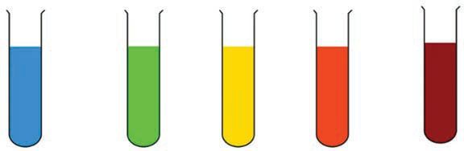<figcaption>Figure fig_ch04_p070_02 (Page 70)</figcaption></figure>
  <div class="page-content">
    <p>zœ“”šȻc IX</p>
    <p>sĞ›¡}–c”cNJŗ›ă“¢Ƽš
ˆĞ›s 3.5“›”s†c¡xƪ§ g‚§ –cŠŰ›ă§ sž}‚Æ šŽ
£s“Ž›Úž</p>
    <p>v}sāÇ</p>
    <p>–š DZ‚ǫ¢ŽšuāÇ</p>
    <p>øž¢Úš–§
fƊŒ›Ä</p>
    <p>Ƃ¢Œ—c
ƽÚ¢ŽšuāÇ</p>
    <p>ŽÞc</p>
    <p>ƽÚ¢ŽšuāÇ</p>
    <p>Š››žŠ›Ä</p>
    <p>ŒĚƀ›Ĺc</p>
    <p>sšÆ–DZcqs§–¢Ǯ§‚Ž›sÇ</p>
    <p>ƽڍ›¡sƼ§</p>
    <p>ˆ’ƀ§¢sš”āÇ</p>
    <p>ŒžŅˆƒĹ›¡eŠš</p>
    <p>ˆĞ›s3.5ŒžŅś¡e–š šŽv}sāÇ</p>
    <p>ŒžŅśÆøž¢Úš–›¡ź–šų› Dzc
ˆŽ›¢”š ›Úšc
ƽśǫ‚c iā›‚Œš ŽĬ ¡}ǡ§}DZžŠsÇ
m}Ús pŽ ¡}ǡ§}DZžŠ›¢Ú§  PO ŒžŅ–šƠ›Ç
m}Ús ŽĬšŒ¡Ĺ ¡}ǡ§}DZžŠ›¢Ú§  PO øž¢Úš–§
š†› m}Ús ŽĬ ¡}ǡ§}DZžŠs‘›¢Úc ¢ĦšƀÅ
iˆ¢šu›ă§PO¡Š†›Ü§œ¢zź§¢xÅڝs2 Œ›†›Ğ§
xž}šÚs–šƠ›‘s‘¡}†›cŒšǮc†›Žœä›Ús
–žx†  øž¢Úš–›¡ź e‘“†–Ž›ă§ –šƠ›‘›¡ź †›c
†œ›Æ†›ųcˆăŒĚqĕ§x“ƀ§mųâŒĹ›Æ
Œšų</p>
    <p>0%</p>
    <p>0.5-1 %</p>
    <p>1-1.5 %</p>
    <p>1.5-2 %</p>
    <p>&gt;2%</p>
    <p>†›Žœäc 
†›uŒ†c</p>
    <p>
70</p>
  </div>
</section><section class="page-section" id="page-71">
  <div class="page-header"><span class="page-number">Page 71</span></div>
  <figure class="diagram-card" id="fig_ch04_p071_01">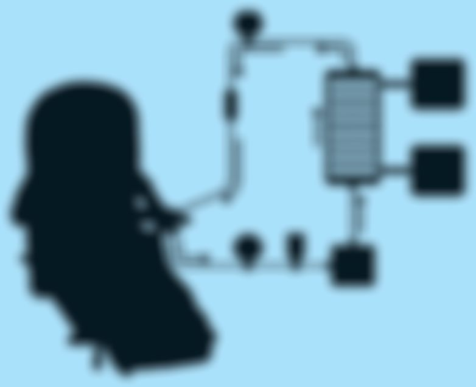<figcaption>Figure fig_ch04_p071_01 (Page 71)</figcaption></figure>
  <figure class="diagram-card" id="fig_ch04_p071_02">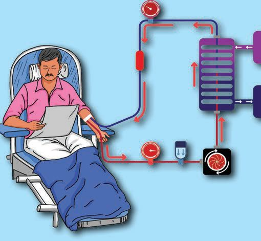<figcaption>Figure fig_ch04_p071_02 (Page 71)</figcaption></figure>
  <figure class="diagram-card" id="fig_ch04_p071_03"><figcaption>Figure fig_ch04_p071_03 (Page 71)</figcaption></figure>
  <figure class="diagram-card" id="fig_ch04_p071_04"><figcaption>Figure fig_ch04_p071_04 (Page 71)</figcaption></figure>
  <figure class="diagram-card" id="fig_ch04_p071_05"><figcaption>Figure fig_ch04_p071_05 (Page 71)</figcaption></figure>
  <figure class="diagram-card" id="fig_ch04_p071_06"><figcaption>Figure fig_ch04_p071_06 (Page 71)</figcaption></figure>
  <figure class="diagram-card" id="fig_ch04_p071_07"><figcaption>Figure fig_ch04_p071_07 (Page 71)</figcaption></figure>
  <figure class="diagram-card" id="fig_ch04_p071_08"><figcaption>Figure fig_ch04_p071_08 (Page 71)</figcaption></figure>
  <figure class="diagram-card" id="fig_ch04_p071_09"><figcaption>Figure fig_ch04_p071_09 (Page 71)</figcaption></figure>
  <figure class="diagram-card" id="fig_ch04_p071_10"><figcaption>Figure fig_ch04_p071_10 (Page 71)</figcaption></figure>
  <figure class="diagram-card" id="fig_ch04_p071_11"><figcaption>Figure fig_ch04_p071_11 (Page 71)</figcaption></figure>
  <figure class="diagram-card" id="fig_ch04_p071_12"><figcaption>Figure fig_ch04_p071_12 (Page 71)</figcaption></figure>
  <figure class="diagram-card" id="fig_ch04_p071_13"><figcaption>Figure fig_ch04_p071_13 (Page 71)</figcaption></figure>
  <figure class="diagram-card" id="fig_ch04_p071_14"><figcaption>Figure fig_ch04_p071_14 (Page 71)</figcaption></figure>
  <figure class="diagram-card" id="fig_ch04_p071_15"><figcaption>Figure fig_ch04_p071_15 (Page 71)</figcaption></figure>
  <figure class="diagram-card" id="fig_ch04_p071_16"><figcaption>Figure fig_ch04_p071_16 (Page 71)</figcaption></figure>
  <figure class="diagram-card" id="fig_ch04_p071_17"><figcaption>Figure fig_ch04_p071_17 (Page 71)</figcaption></figure>
  <figure class="diagram-card" id="fig_ch04_p071_18">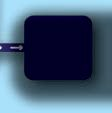<figcaption>Figure fig_ch04_p071_18 (Page 71)</figcaption></figure>
  <figure class="diagram-card" id="fig_ch04_p071_19">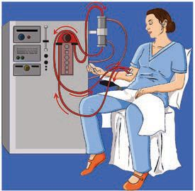<figcaption>Figure fig_ch04_p071_19 (Page 71)</figcaption></figure>
  <div class="page-content">
    <p>zœ“”šȻc IX</p>
    <p>ŒžŅś¡ e–š šŽ v}sāÇ ˆŽ›¢”š ›ă§ ¢ŽšuāÇ
‚›Ž›ă›šÄs’›¡Œų§Œ†Ǡ›šÚ›¢Ƽš
†›ā‘¡} Ƃ¢„”¡Ĺ ¡Œ›ÚÆ ¢ŠšĞ› –ŭŔ›ă§
ŒžŅˆŽ›¢”š †–cŠŰ›ă “›“Ž¢”tŽc †}śŒžŅś¡
v}sā‘¡} –š šŽ ¢‚š‚§ iÇ¡ƀ}ų ˆĞ›s ‚ƭššÚ›
㚖›ÆƂ„Å”›ƀ›Úž
ƽڍ›¡ sƼ§ ¡†£ƋǮ›–§ œŒ› Œ‚š“ ƽÚ¡
Šš ›Úųx›¢Žšuā‘š§h¢Žšuā‘¡}sšŽāÇ
¢ŽšuäāÇ mų›“ iÇ¡ƀ}Ĺ› ›z›ǮÆ Ƃ–¢ź•Ä
‚ƭššÚ›㚖›Æe“‚Ž›ƀ›Úž</p>
    <p>—œ¢Œšš›–›–§ (Hemodialysis)
gŽƽÚs‘cƂ“ÅņŽ—›‚ŒššÆŽÞśÆ†›ų§ Œš›
†DZā¡‘ †œÚc¡xƭųƂ⛍‚}Ǡ¡ƀ}c‚Ŷžc “›–ÅzDZ
“ǘÚÇeŽ›ăŒšǮš¡‚ŽÞśÆ‚¡ų †›†›Æڝcg‚§
fŦŽ–ŒǙ›‚›¡ ‚sŽš›šÚc gŎc –ŭŋā‘›Æ
zœ“ÄŽä›Úš†š§ —œ¢Œšš›–›–§ †}ŝų‚§—œ¢Œš
š›–›–§ mā¡†š§ †›Å“—›Úų‚§ mų§ x›ŅœsŽ
c 3.13 “›”s†c ¡xƪ§ s›ƀ§‚ƭššÚ</p>
    <p>Ƃ•Å
¢Œš›ǮÅ</p>
    <p>1 Œš›†DZā‘¡}e‘“§sž}›
ŽÞcsЈ›}›Úš‚›Ž›ÚšÄ
¡—ƀšŽ›Ä¢xÅĹ¢”•c
š›–›–§ž›Ǯ›¢Ú§
s}ś“›}ų</p>
    <p>š›–›–§
ŝ“c</p>
    <p>2</p>
    <p>2 š›–›–§ ž›Ǯ›ž¡}</p>
    <p>iˆ¢šu›ă
š›–›–§
ŝ“c</p>
    <p>3</p>
    <p>ŽÞcp’s¢ƠšÇŽÞś¡
Œš›†DZāÇ›‰DZž•†›ž¡}
š›–›–§ŝ“Ĺ›¢Ú§
“DZšˆ›Úųhŝ“¡Ĺ
ƒš–Œc †œÚc¡xƭų</p>
    <p>1</p>
    <p>3 ”ŗœsŽ›Ú¡ƀĞŽÞśÆ</p>
    <p>“Ž‚šŽDZǘŽc ¡sšĬ
†›Åƣ›ăs’sÇ</p>
    <p>fź›¡—ƀšŽ›Ä¢xÅŧ‚›Ž›¡s
”ŽœŽĹ›¢Ú§s}ś“›}ų</p>
    <p>x›ŅœsŽc 3.13 —œ¢Œšš›–›–§
71</p>
  </div>
</section><section class="page-section" id="page-72">
  <div class="page-header"><span class="page-number">Page 72</span></div>
  <figure class="diagram-card" id="fig_ch04_p072_01"><figcaption>Figure fig_ch04_p072_01 (Page 72)</figcaption></figure>
  <figure class="diagram-card" id="fig_ch04_p072_02"><figcaption>Figure fig_ch04_p072_02 (Page 72)</figcaption></figure>
  <figure class="diagram-card" id="fig_ch04_p072_03"><figcaption>Figure fig_ch04_p072_03 (Page 72)</figcaption></figure>
  <figure class="diagram-card" id="fig_ch04_p072_04"><figcaption>Figure fig_ch04_p072_04 (Page 72)</figcaption></figure>
  <figure class="diagram-card" id="fig_ch04_p072_05"><figcaption>Figure fig_ch04_p072_05 (Page 72)</figcaption></figure>
  <figure class="diagram-card" id="fig_ch04_p072_06"><figcaption>Figure fig_ch04_p072_06 (Page 72)</figcaption></figure>
  <figure class="diagram-card" id="fig_ch04_p072_07">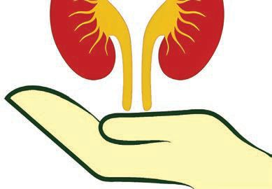<figcaption>Figure fig_ch04_p072_07 (Page 72)</figcaption></figure>
  <figure class="diagram-card" id="fig_ch04_p072_08">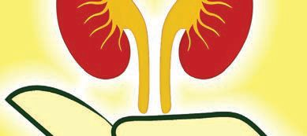<figcaption>Figure fig_ch04_p072_08 (Page 72)</figcaption></figure>
  <figure class="diagram-card" id="fig_ch04_p072_09"><figcaption>Figure fig_ch04_p072_09 (Page 72)</figcaption></figure>
  <figure class="diagram-card" id="fig_ch04_p072_10"><figcaption>Figure fig_ch04_p072_10 (Page 72)</figcaption></figure>
  <div class="page-content">
    <p>zœ“”šȻc IX</p>
    <p>“›“› ‚Žc š›–›–s¡‘ƀǮ› “›“Ž¢”tŽc †}ś
ãšǠ›Æe“‚Ž›ƀ›Ú—œ¢Œšš›–›–§Ƃ⛍¡}v
e†›¢Œ•Ä‚ƭššÚ›ãšǠ›ÆƂ„Å”›ƀ›Úž</p>
    <p>ƾڌšǯ›“ƩÆ (Kidney transplantation)
m¢ƀš’š§ƽڌšǮ›“§¢ÚĬ› “Žų‚§#

</p>
    <p>§
š›–›–
†›ų§
ž›Ǯ›Æ
§
š›–›–
Œc
ŝ“cƒš– §#
ݠ
ŒšǮų¡‚Ŧ
s¡ĬŞ</p>
    <p>x›ŅœsŽc 3.14 “›”s†c ¡xƪ§ƽڄš†c–cŠŰ›ă§s›ƀ§
‚ƭššÚ</p>
    <p>„š‚š“§
ˆžÅĴf¢ŽšuDZ“š†špŽšÇˆžÅĴ
f¢ŽšuDZ“š†š›Ž›¡Úeˆs}śÆ
¡ƀ¢ĞšŒ¢ǮšŒŽ¡ƀĞfÇ</p>
    <p>Œ¡ųšŽÚc
ŽÞ÷žƀ§Œšă›cu§}›•DZŒšă›cu§
¢âš–§Œšă›cu§</p>
    <p>”ȼ⛍
„š‚š“›Æ†›¡ų}Ĺƽڍ¡}ŽÞ
ڝ’s‘cŒžŅ“š—›c –ǴœsÅŚ
“›¢ź‚Œš›¢šz›ƀ›Úų</p>
    <p>”ȼ⛍Ʃ§ ¢”•c
Ƃ‚›¢Žš ¡ĹŒŭœ‹“›ƀ›ÚųŒŽų
sÇiˆ¢šu›¢ÚĬ› “Žų‚}Å
ˆŽ›¢”š †f“”DZŒš§
x›ŅœsŽc 3.14 ƽڌšǮ›“ƩÆ</p>
    <p>sž}‚Æ“›“ŽāÇ¢”tŽ›ă§ƽڄš†Ĺ›¡ź
Ƃš š†DZc–žx›ƀ›Úų›z›ǮÆ¢ˆšǡÅ
ix›‚Œš¢–šƎ¡“Åiˆ¢šu›ă§‚ƭššÚ›
㚖›ÆƂ„Å”›ƀ›Úž</p>
    <p>72</p>
  </div>
</section><section class="page-section" id="page-73">
  <div class="page-header"><span class="page-number">Page 73</span></div>
  <figure class="diagram-card" id="fig_ch04_p073_01">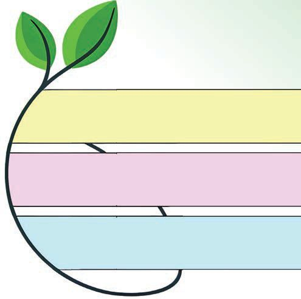<figcaption>Figure fig_ch04_p073_01 (Page 73)</figcaption></figure>
  <figure class="diagram-card" id="fig_ch04_p073_02"><figcaption>Figure fig_ch04_p073_02 (Page 73)</figcaption></figure>
  <figure class="diagram-card" id="fig_ch04_p073_03"><figcaption>Figure fig_ch04_p073_03 (Page 73)</figcaption></figure>
  <figure class="diagram-card" id="fig_ch04_p073_04">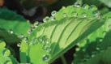<figcaption>Figure fig_ch04_p073_04 (Page 73)</figcaption></figure>
  <figure class="diagram-card" id="fig_ch04_p073_05"><figcaption>Figure fig_ch04_p073_05 (Page 73)</figcaption></figure>
  <figure class="diagram-card" id="fig_ch04_p073_06">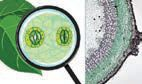<figcaption>Figure fig_ch04_p073_06 (Page 73)</figcaption></figure>
  <figure class="diagram-card" id="fig_ch04_p073_07"><figcaption>Figure fig_ch04_p073_07 (Page 73)</figcaption></figure>
  <figure class="diagram-card" id="fig_ch04_p073_08">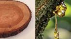<figcaption>Figure fig_ch04_p073_08 (Page 73)</figcaption></figure>
  <div class="page-content">
    <p>zœ“”šȻc IX</p>
    <p>“›–Åz†cŒǯ§ zœ“›s‘›Æ
q¢Žš zœ“››c zœ“ÆƂ“ÅņāÇچ–Ž›ă§ “›–ÅzDZ“
ǘ“›Æ “DZ‚DZš–ŒĬšs›¢Ƽ# mƼš zœ“›s‘›c Œ†•DZ†›
ǫ‚¡ˆš¡ƽڍš¢šŒtDZ“›–Åz†š““c#
x“¡} †Æs››Ž›Úų zœ“›s‘›¡ ŒtDZ “›–ÅzDZ“ǘ
“›–Åz†š““cmų›“¡ƀǮ› “›“Ž¢”tŽc †}śˆĞ›s
3.6ˆžÅśšÚž
zœ“›
eŒœŠ</p>
    <p>ŒtDZ“›–ÅzDZ“ǘ</p>
    <p>ŒtDZ“›–Åz†š““c
–c“› š†c</p>
    <p>e¢Œš›</p>
    <p>–¢ÿšx¢‰†c</p>
    <p>ŒĴ›Ž
•§ˆ„āÇ
ŒŇDZc
‚“‘
iŽuāÇ
ˆä›sÇ</p>
    <p>ˆĞ›s 3.6 ŒǮ§ zœ“›s‘›¡ “›–Åz†c
zŦÚÇÚ§ “›–Åz†Ĺ›†§ “›ˆŒš –c“› š†ŒĬ§
mųšÆ ––DZāÇÚ§ zŦÚ‘›Æ iǫ‚¢ˆš¡ Ƃ¢‚DZs
“›–Åz† “DZ“Ǚ›Ƽ
x›ŅœsŽc 3.15 “›”s†c ¡xƪ§ ––DZā‘›¡ “›–Åz†c
–cŠŰ›ă§s›ƀ§‚ƭššÚž</p>
    <p>O2, CO2, zŠšǒc¡ǡš¢ŒǮ¡ź›¡–Æ
zc“āÇ£—¢Ĺš§</p>
    <p>tŽŒš›†DZāÇ</p>
    <p>–›†sLjc¡‚š›ˆ’Ĺ
gs‘csšƨ‘c ¡sš’›Æ
sš‚ÆŽžˆœsŽc</p>
    <p>x›ŅœsŽc 3.15 ––DZā‘›¡ “›–Åz†c
73</p>
  </div>
</section><section class="page-section" id="page-74">
  <div class="page-header"><span class="page-number">Page 74</span></div>
  <figure class="diagram-card" id="fig_ch04_p074_01">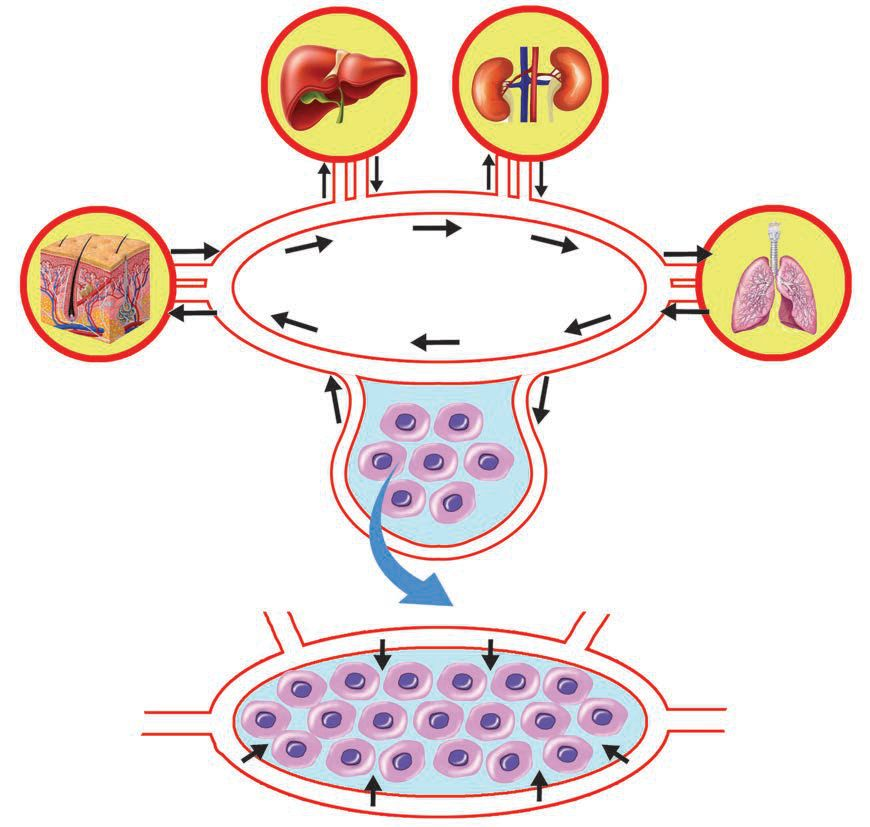<figcaption>Figure fig_ch04_p074_01 (Page 74)</figcaption></figure>
  <div class="page-content">
    <p>zœ“”šȻc IX</p>
    <p>–Œǚ›‚›ˆš†c(Homeostasis)
–ŒǙ›‚›ˆš†Œš¢Ƽšzœ“¡źe}š‘csŽÇƽÚ”Ǵš–
¢sš”c‚ǴÚ§mų›““›–Åz†Ƃ⛍›ÆmƂsšŽcˆ¡ÿ}
ڝų¡“ų§Œ†Ǡ›šÚ›¢Ƽšg‚§–ŒǙ›‚›ˆš†Ĺ›†ǫ
ŒšÅuc sž}›š§ h e““āÇ n¡‚Ƽšc Žœ‚››Æ –Œ
Ǚ›‚›ˆš†Ĺ›†–—š›Úų#
x›ŅœsŽc3.16“›”s†c¡xƪ§s›ƀ§‚ƭššÚž
Ñ ¡ŒǮš¡Šš‘›–¡Ĺ
†›ũ›Úų
Ñ “›•“ǘÚ¡‘
†›Å“œŽDZŒšÚų</p>
    <p>Ñ z“–Ŧ†c
Ñ ŽÞ–ŒÅ„⌜sŽc
• pH⌜sŽc
Ñ Œš›†DZā¡‘
ˆŦǫų</p>
    <p>‚ǴÚ§
‚šˆ†›
z“
⌜sŽc</p>
    <p>• CO2ˆŦǫÆ
• O2 ¢‚š‚§⌜sŽ›ÚÆ</p>
    <p>• pH⌜sŽc
}›•DZŝ“c
¢sš”c</p>
    <p>ŽÞc</p>
    <p>}›•DZŝ“Ĺ›¡ź
v}†ƒš–Œc
⌜sŽ›ă§¢sš”
ā‘›ÆmÄ£–
ŒsÇÚ§Ƃ“Å
śښÄnǮ“c
Œ›săe“Ǚ
†Æsų</p>
    <p>x›ŅœsŽc3.16 –ŒǙ›‚›ˆš†c
fŦŽˆŽ›Ǚ›‚››Ĭšsų n¡‚šŽ “DZ‚›š†“c
–ŒǙ›‚›¡‚s›}cŒ›Úų†ƣ¡}¡‚Ǯšzœ“›‚£”›
e‚›ÆŒtDZˆÿ“—›Úų–ŒǙ›‚›¡Šš ›Úųv}s
āÇ–cŠŰ›ă–žx†sÇ‚š¡’‚ų›Ž›Úų“›“Ž¢”tŽc
†}śãšǠ›Æ¡–Œ›†šÅ–cv}›ƀ›Úž
74</p>
  </div>
</section><section class="page-section" id="page-75">
  <div class="page-header"><span class="page-number">Page 75</span></div>
  <figure class="diagram-card" id="fig_ch04_p075_01">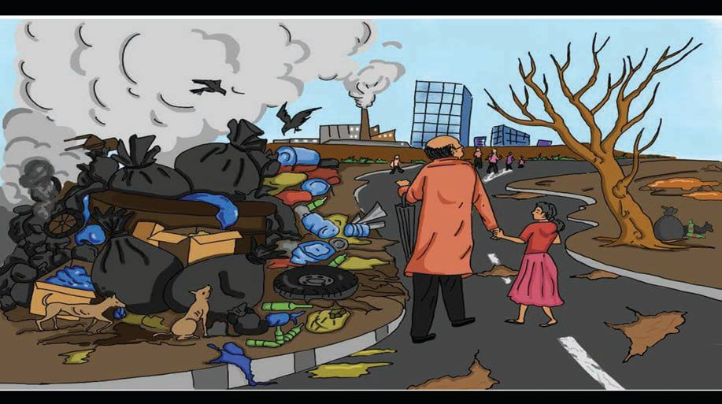<figcaption>Figure fig_ch04_p075_01 (Page 75)</figcaption></figure>
  <div class="page-content">
    <p>zœ“”šȻc IX</p>
    <p>iˆ“›•āÇ
y ¡‚Ǯšf—šŽ”œāÇeŒ›‚¢ˆš•c†DZž†¢ˆš•c
y “DZššŒŒ›Ƽš§ŒŒš†–›s–ƣńc
y Œ„DZˆš†cˆs“›ŒÚŒŽųs‘¡}iˆ¢šuc
y Œ›†œsŽc”x›‚ǴŒ›Ƽš§Œ¢ŽšušÚ‘¡}f ›sDZc
y ŒŽųs‘¡}¡‚Ǯšiˆ¢šuc“›•“ǘÚ‘Œšǫ–ƠÅÚc
fŦŽˆŽ›Ǚ›‚› ¢ˆš¡‚¡ų Šš—DZˆŽ›Ǚ›‚›c “‘¡Ž
Ƃš š†DZŒÅ—›Úųx›Ņc3.3†›Žœä›ă§†›ā‘¡}Ƃ¢„”ŧ
gŎc –š—xŽDZā‘¡Ĭÿ›Æ e‚§ Šš—DZˆŽ›Ǚ›‚›¡
mƂsšŽcŠš ›Úcmų§s¡Ĭś›¢ƀšÅЧ‚ƭššÚž</p>
    <p>x›Ņc3.3 ˆŽ›Ǚ›‚›cŒ›†œsŽ“c
Šš—DZˆŽ›Ǚ›‚››¡¢„š•sŽŒšgŎcŒšǮā¡‘p’›“š
ښ†ǫŒšÅuā¡‘ڝ›ă§pŽˆš†ÆxÅă–cv}›ƀ›Úž
iˆ“›•āÇ
y “DZޛsÇ
y —Ž›‚sÅƣ¢–†
y ¡ˆš‚–Œž—c
y Œ¢†š‹š“c
y ‚¢Ŕ”–Ǵc‹ŽǙšˆ†āÇ y †›ŒāÇ
75</p>
  </div>
</section><section class="page-section" id="page-76">
  <div class="page-header"><span class="page-number">Page 76</span></div>
  <figure class="diagram-card" id="fig_ch04_p076_01"><figcaption>Figure fig_ch04_p076_01 (Page 76)</figcaption></figure>
  <figure class="diagram-card" id="fig_ch04_p076_02"><figcaption>Figure fig_ch04_p076_02 (Page 76)</figcaption></figure>
  <figure class="diagram-card" id="fig_ch04_p076_03"><figcaption>Figure fig_ch04_p076_03 (Page 76)</figcaption></figure>
  <div class="page-content">
    <p>zœ“”šȻc IX</p>
    <p>xÅ㍝¡}e}›Ǚš†Ĺ›ÆŽžˆ¡ƀĞf”ā¡‘
iÇ¡ƀ}Ĺ›Œš›†DZŒÞ†“¢sŽ‘cmų“›•Ĺ›Æ
pŽ¢šÇ¢ƃe“‚Ž›ƀ›Úž</p>
    <p>zœ“zšā‘¡}–Ǚ›‚›Ú§Šš—DZˆŽ›–ŽcŒš›†DZŒÞŒš›
–cŽä›Úce‚›†ǫŒ¢†š‹š“cq¢ŽšŽĹŽ›cŽžˆ¡ƀ}c
“›„DZš“c ˆŽ›–Ž“c Œš›†DZŒÞŒšÚų‚›†ǫ ŒšǡÅ
ƃšÄ ¡—Æŧ ãƔ›¡ź f‹›ŒtDZśÆ ‚ƭššÚ› “›„DZš
ŒšǡÅƃš†›ÆiÇ¡ƀ}Ĺ› †}ƀ›šÚž
f¢ŽšuDZsŽŒš zœ“›‚Ĺ›†§  Šš—DZˆŽ›Ǚ›‚›¡}c
fŦŽˆŽ›Ǚ›‚›¡}c –Ǚ›‚› e†›“šŽDZŒš§ Šš—DZ
ˆŽ›–ŽcŒš›†DZŒÞŒšÚ›–žä›¢ÚĬ‚cfŦŽˆŽ›Ǚ›¡}
‚š‘c ¡‚ǮšĹ zœ“›‚Žœ‚› ˆ›Ŧ}¢ŽĬ‚c †ƣ¡} iŎ“š
„›ĹŒš§e‚›†šÆĹ¡ųf¢ŽšuDZ–cŽäĹ›†‚sų
zœ“›‚£”›†ŒÚ§e†“Åśښc</p>
    <p>76</p>
  </div>
</section><section class="page-section" id="page-77">
  <div class="page-header"><span class="page-number">Page 77</span></div>
  <figure class="diagram-card" id="fig_ch04_p077_01"><figcaption>Figure fig_ch04_p077_01 (Page 77)</figcaption></figure>
  <figure class="diagram-card" id="fig_ch04_p077_02">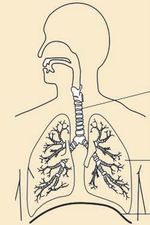<figcaption>Figure fig_ch04_p077_02 (Page 77)</figcaption></figure>
  <figure class="diagram-card" id="fig_ch04_p077_03">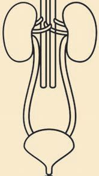<figcaption>Figure fig_ch04_p077_03 (Page 77)</figcaption></figure>
  <div class="page-content">
    <p>zœ“”šȻc IX</p>
    <p>“››ŽĹšc
1.</p>
    <p>‚ų›Ž›Úų“›Æn‚š§sšŽDZ䌌š“š‚s
“›†›ŒƂ‚Ĺ›¡ź–“›¢”•‚ƼšĹ‚§#
a) sĞ›sž}›‹›Ĺ›
b) ŽÞ¢šŒ›ss‘¡}–šŒœˆDZc
c) hÅƀŒǫf“Žc
d) “›Ƃ‚“›ǘœÅĴc</p>
    <p>2.</p>
    <p>x›Ņc ˆsÅś“Žă§‹šuāÇe}š‘¡ƀ}Ĺs</p>
    <p>a</p>
    <p>b</p>
    <p>c
3.</p>
    <p></p>
    <p>“š‚s–c“—†Ĺ›Æx“¡}†Æs››Ž›Úų“¡}
ˆÿ§m’‚s
a)
ƃš–§Œ
b)
c)
d)</p>
    <p>4. </p>
    <p>RBC</p>
    <p>—œ¢Œš¢øšŠ›Ä
}›•DZŝ“c</p>
    <p>x›Ņc ˆsÅś“Žă§‹šuā‘¡} ¢ˆŽc Åƣ“c 
m’‚s
a</p>
    <p>b</p>
    <p>c
d
77</p>
  </div>
</section><section class="page-section" id="page-78">
  <div class="page-header"><span class="page-number">Page 78</span></div>
  <figure class="diagram-card" id="fig_ch04_p078_01"><figcaption>Figure fig_ch04_p078_01 (Page 78)</figcaption></figure>
  <figure class="diagram-card" id="fig_ch04_p078_02">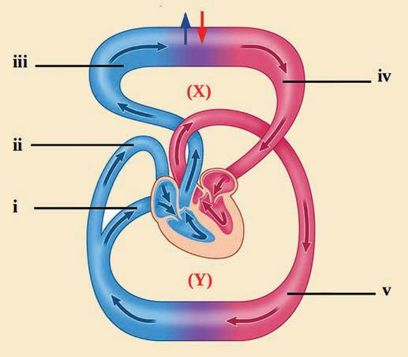<figcaption>Figure fig_ch04_p078_02 (Page 78)</figcaption></figure>
  <div class="page-content">
    <p>zœ“”šȻc IX
5.x›Ņc “›”s†c ¡xƪ§¢xš„DZāÇÚ§iŎ¡Œ’‚s</p>
    <p>”Ǵš–¢sš”c</p>
    <p>”ŽœŽssÇ
a)
E
c)
d)</p>
    <p>X, Y mųœˆŽDZ†ā‘¡} ¢ˆ¡Ž’‚s
LLLLLLLYY mųœŽÞڝ’s‘¡} ¢ˆŽsÇm’‚s</p>
    <p>“š‚s“›†›Œc “š‚s–c“—†c mų›“›Æ h
ˆŽDZ†ā‘¡}ˆ¡ÿŦ§#
“›–Åz†Ƃ⛍›ÆhˆŽDZ†ā‘¡}ˆÿ§
“›”„œsŽ›Ús#</p>
    <p>‚}ÅƂ“ÅņāÇ
ƂšƒŒ›s f¢ŽšuDZ¢sůś¡ ¢šÜ¡ –ŭŔ›ă§
”Ǵš–¢sš”¢ŽšuāÇ ƽÚ¢ŽšuāÇ mų›“ –cŠŰ›ă§
e‹›Œtc †}ŝs
2. ”Ǵ–†“DZ“Ǚ ƽÚ e†ŠŰ‹šuāÇ mų›“¡}
ŒšĶs‚ƭššÚ›ãšǠ›ÆƂ„Å”›ƀ›Ús
3. e““„š†c –cŠŰ›ă§ ¢Šš “Æڎ ãšǠ§ –cv
}›ƀ›Ús
4. “œ}§ “›„DZšc mų›“ Œš›†DZ ŒÞŒšÚų‚›†ǫ
ˆŽ›ˆš}›sÇf–žŅc ¡xƪ§†}ƀ›šÚs
1.</p>
    <p>78</p>
  </div>
</section><section class="page-section" id="page-79">
  <div class="page-header"><span class="page-number">Page 79</span></div>
</section><section class="page-section" id="page-80">
  <div class="page-header"><span class="page-number">Page 80</span></div>
  <figure class="diagram-card" id="fig_ch04_p080_01"><figcaption>Figure fig_ch04_p080_01 (Page 80)</figcaption></figure>
</section>
    </main>
    <footer>
      <div class="nav-bar"><a href="part_1_chapter_03.html">← Chapter 3 (Pages 47-66)</a><a href="index.html">☰ Index</a><span class="nav-bar disabled"></span></div>
      <p style="text-align: center; font-size: 0.85rem; color: var(--text-muted); margin-top: 2rem;">
        Kerala SCERT Class 9 Biology (Malayalam Medium) - Extracted Study Text
      </p>
    </footer>
  </div>
</body>
</html>
